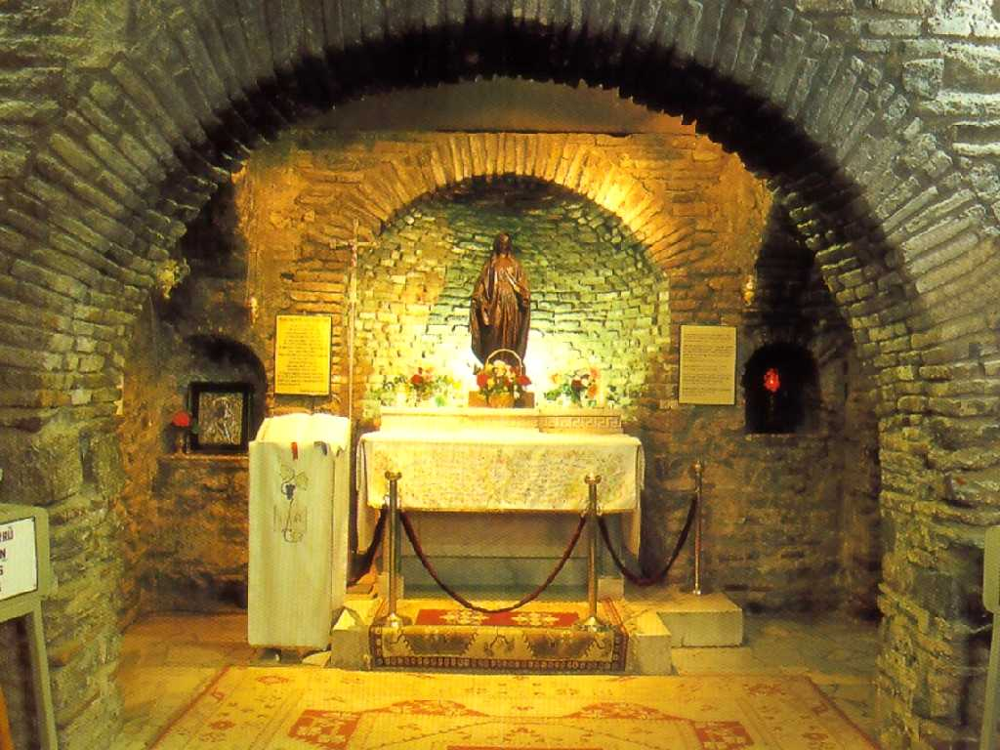
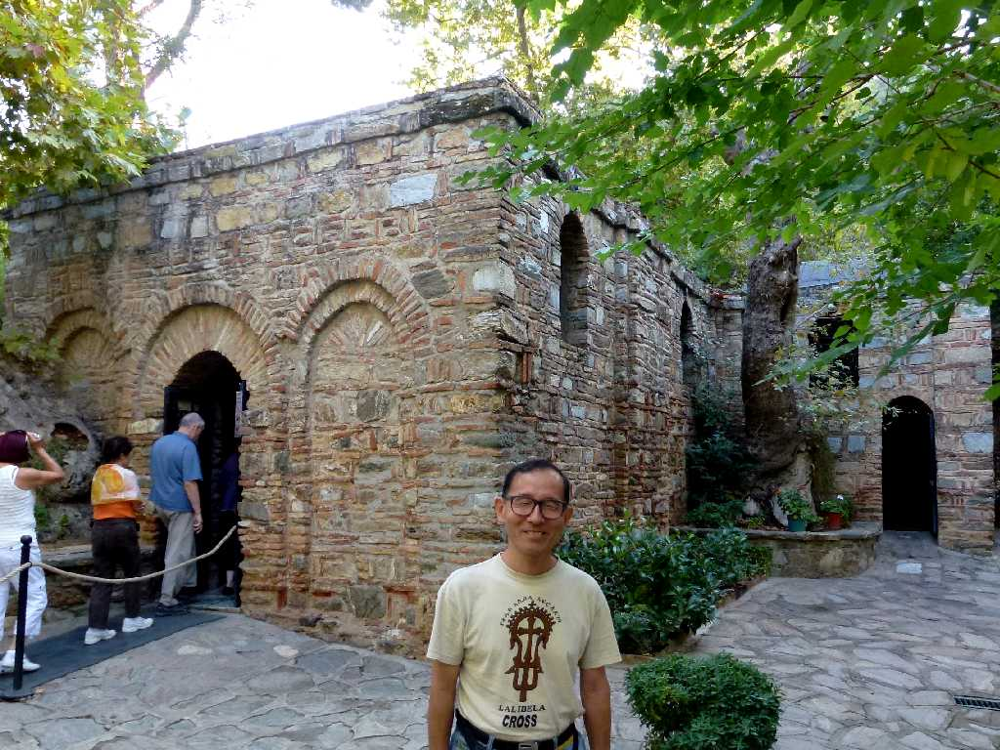
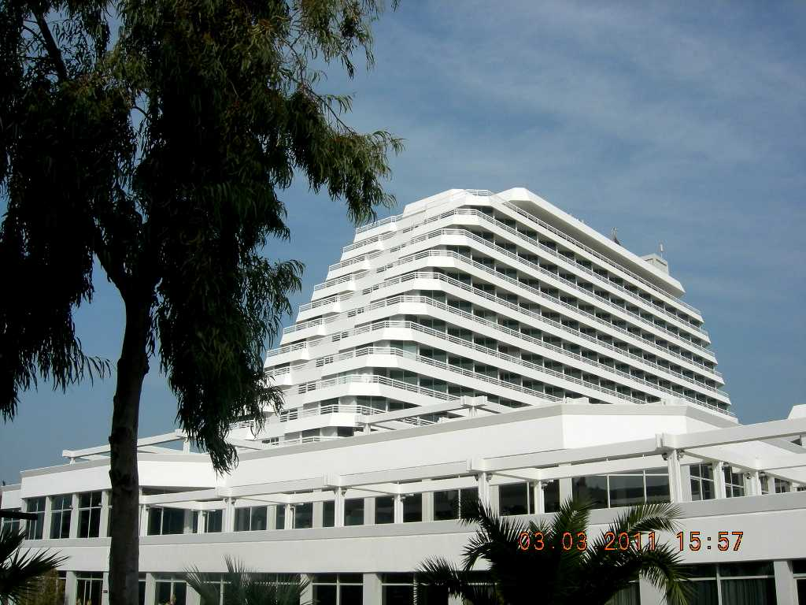

House of The Virgin Mary Kuşadası
キリストが十字架に貼り付けられた後ここに隠れ住み聖ヨハネがお世話をしたと云われる聖母マリアの家

September 23 2011 House of The Virgin Mary
家の土台は１世紀のものと云われている

Sürmelı Hotel
エーゲ海のリゾート地クシャダスのスルメリリゾートホテルのプライベートビーチで海水浴を楽しむ